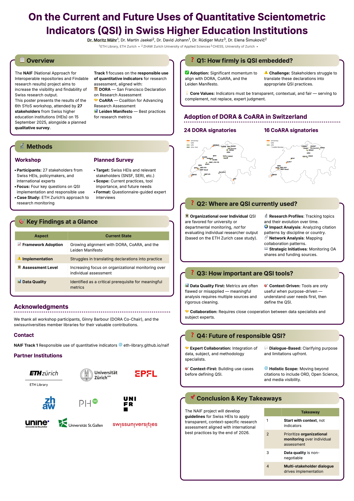

Make this Notebook Trusted to load map: File -> Trust Notebook
NAIF at the Research on Research Event 2026
Track 1 presented findings on quantitative scientometric indicators in Swiss Higher Education Institutions at the RoR Event 2026 in Zurich.
Track 1
From 29 to 30 January 2026, the Center for Reproducible Science and Research Synthesis (CRS) at the University of Zurich hosted the Research on Research (RoR) Event 2026. NAIF Track 1 contributed a poster on the responsible use of quantitative scientometric indicators (QSI) in Swiss Higher Education Institutions (HEIs).
Dr Moritz Mähr ![]()

Why it matters
Swiss HEIs are increasingly aligning with international frameworks for responsible research assessment, including DORA and CoARA. However, translating these commitments into everyday practice remains a challenge. The relationship is reciprocal: the indicators institutions choose shape the metadata they collect and curate, while the quality of that underlying data determines which indicators can be computed responsibly. Getting either side wrong — adopting metrics without adequate data infrastructure, or maintaining rich metadata that nobody acts on — undermines research visibility and the interoperability goals at the heart of NAIF.
What we did
We presented a poster titled On the Current and Future Uses of Quantitative Scientometric Indicators (QSI) in Swiss Higher Education Institutions (DOI: 10.5281/zenodo.18656169) during the poster flash talks and the dedicated poster session on Day 1 of the event. The poster was authored by Dr Moritz Mähr (ETH Library, ETH Zurich), Dr Martin Jaekel (ZHAW), Dr David Johann (ETH Library, ETH Zurich), Dr Rüdiger Mutz (CHESS, University of Zurich), and Elena Šimukovič (ZHAW).
The poster synthesised results from the 6th Swiss Year of Scientometrics (SYoS) workshop, held on 11 September 2025, with 27 stakeholders from Swiss HEIs, policy bodies, and international initiatives. It also outlined a planned qualitative survey targeting Swiss HEIs and other stakeholders such as the Swiss National Science Foundation (SNSF) and the State Secretariat for Education, Research and Innovation (SERI).
What we found
The poster addressed four topics. First, QSI adoption is growing — 24 Swiss institutions have signed DORA and 16 are CoARA signatories — but stakeholders struggle to translate these declarations into appropriate practices. Second, indicator use is concentrated at the organisational level (research profiles, collaboration networks, the share of open access publications, and citation patterns). In the ETH Zurich case study, metrics serve primarily to monitor institutional profiles and collaboration structures rather than to evaluate individual researchers. This development can be understood as a move toward more responsible and context-sensitive research assessment. Third, data quality emerged as a non-negotiable prerequisite: metrics are often flawed or misapplied, and meaningful analyses require multiple sources and rigorous data cleaning. Fourth, the future of responsible QSI lies in deeper expert collaboration, dialogue-based approaches, context-first design, and a broader scope that includes research data, open science, and media visibility.
Make this Notebook Trusted to load map: File -> Trust Notebook
What’s next
Based on this work, NAIF will develop practical guidelines for Swiss HEIs to support transparent, context-specific research assessment aligned with international best practices by the end of 2026. A qualitative survey of Swiss HEIs is planned to complement the workshop findings.
What to reuse
The poster and further information about the project are available on the NAIF website. All NAIF deliverables are archived on Zenodo.